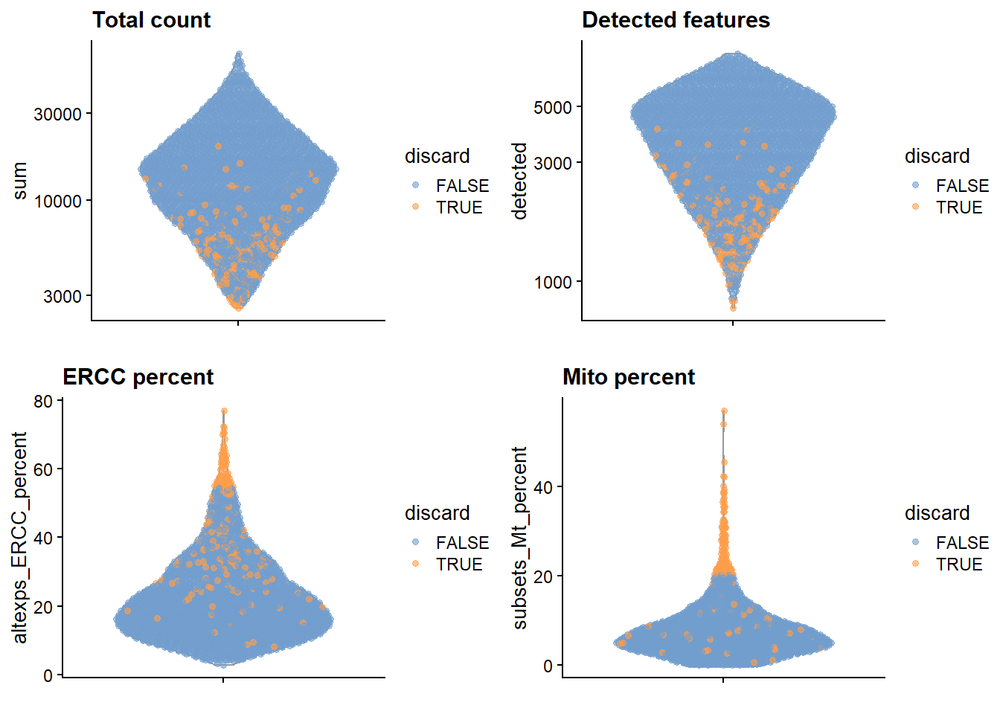
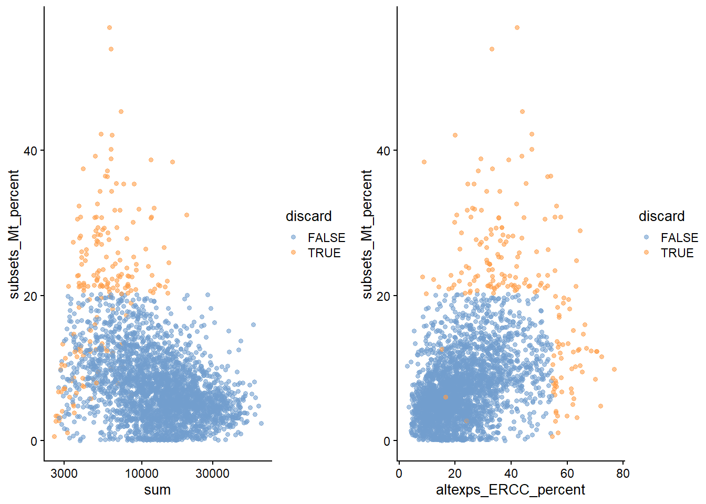
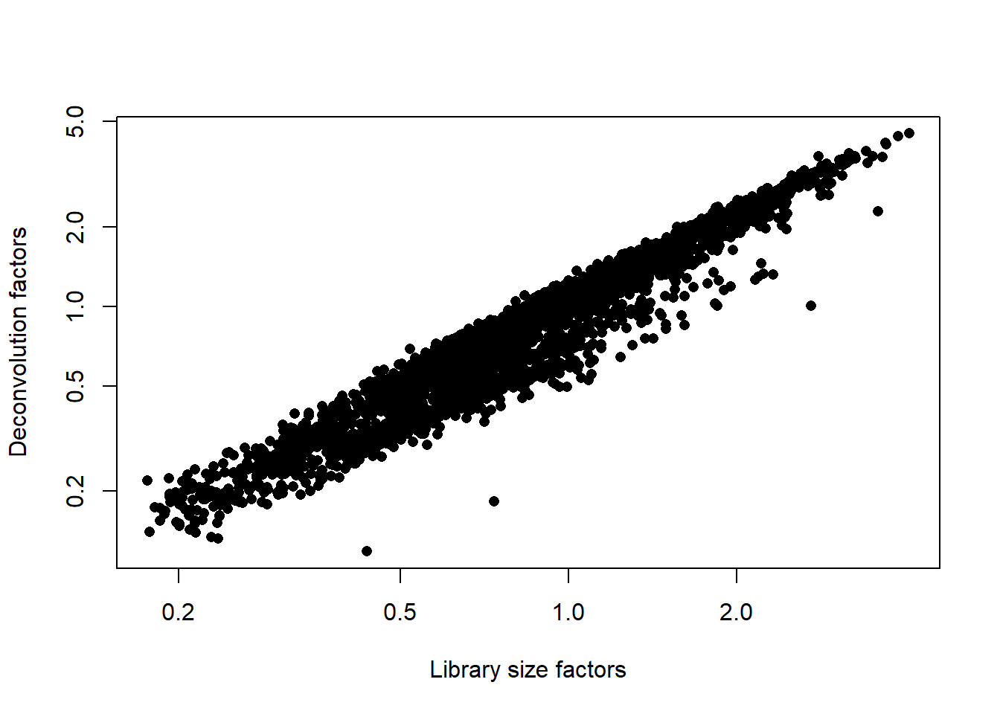
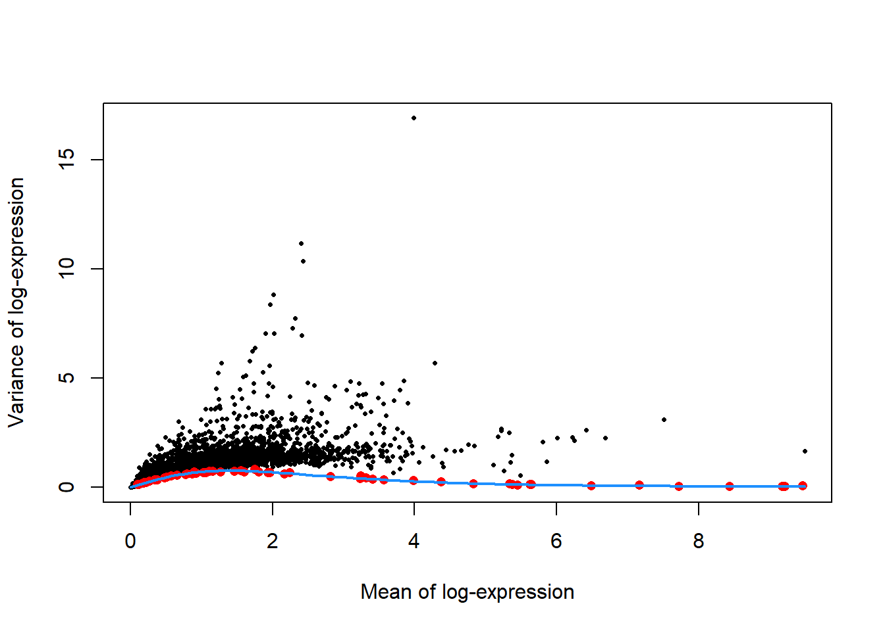
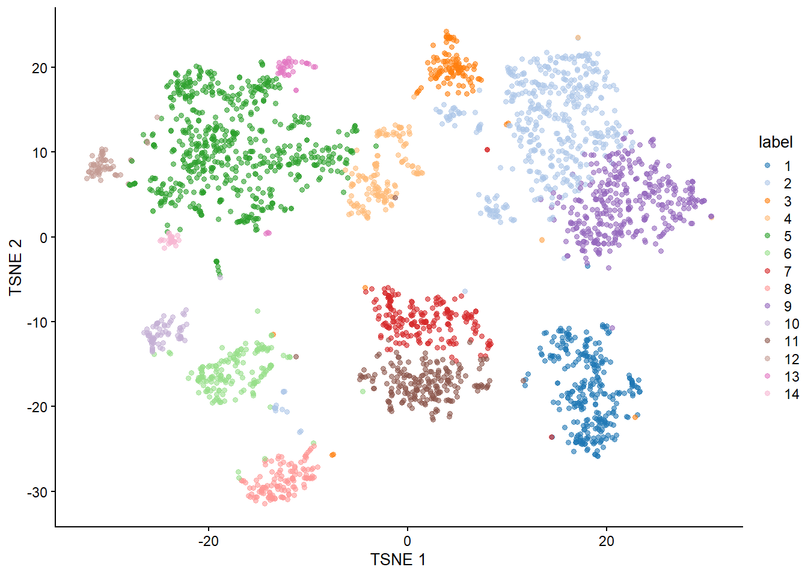
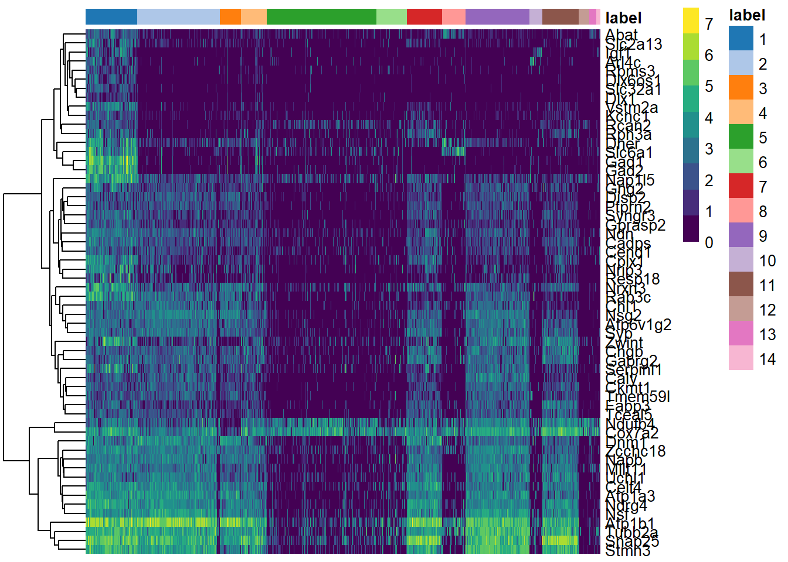

RNA-seq analysis with simpleSingleCell from Bioconductor
Author
Thomas Walsh
Published
May 4, 2026
Overview
This Quarto document reproduces, as an academic exercise, the Bioconductor workflow package simpleSingleCell using a pipeline utilizing a heterogeneous dataset from a study of cell types in the mouse brain (Zeisel et al. 2015). This pipeline will use a study of cell types in the mouse brain to demonstrates a complete single-cell RNA-seq (scRNA-seq) analysis pipeline using Bioconductor tools to: * Process raw single-cell gene expression data * Remove low-quality cells * Normalize technical variation * Identify biologically meaningful variation * Cluster cells into distinct populations * Detect marker genes to assign cell types
Ultimatlely, the workflow will be able to identify distinct brain cell populations (e.g., interneurons) from heterogeneous data.
Introduction
Here we examine a heterogeneous dataset from a study of cell types in the mouse brain (Zeisel et al. 2015). This contains approximately 3000 cells of varying types such as oligodendrocytes, microglia and neurons. Individual cells were isolated using the Fluidigm C1 microfluidics system (Pollen et al. 2014) and library preparation was performed on each cell using a UMI-based protocol. After sequencing, expression was quantified by counting the number of Unique Molecular Identifiers (UMIs) mapped to each gene.
Data Loading
First, obtain a SingleCellExperiment object for this dataset using the relevant function from the scRNAseq package. The idiosyncrasies of the published dataset means that we need to do some extra work to merge together redundant rows corresponding to alternative genomic locations for the same gene.
# Packages/callssce.zeisel <-ZeiselBrainData()sce.zeisel <-aggregateAcrossFeatures(sce.zeisel, id=sub("_loc[0-9]+$", "", rownames(sce.zeisel)))# Fetch the Ensembl gene IDs, just in case they're needed them later.rowData(sce.zeisel)$Ensembl <-mapIds(org.Mm.eg.db, keys=rownames(sce.zeisel), keytype="SYMBOL", column="ENSEMBL")
'select()' returned 1:many mapping between keys and columns
Quality Control
The original dataset had already removed low-quality cells prior to data publication. Nonetheless, compute some quality control metrics to check whether the remaining cells are satisfactory.
colData(unfiltered) <-cbind(colData(unfiltered), stats)unfiltered$discard <- qc$discard# qc metric plots#| fig-cap: "Figure 1: Distribution of each QC metric across cells in the Zeisel brain dataset. Each point represents a cell and is colored according to whether that cell was discarded."gridExtra::grid.arrange(plotColData(unfiltered, y="sum", colour_by="discard") +scale_y_log10() +ggtitle("Total count"),plotColData(unfiltered, y="detected", colour_by="discard") +scale_y_log10() +ggtitle("Detected features"),plotColData(unfiltered, y="altexps_ERCC_percent",colour_by="discard") +ggtitle("ERCC percent"),plotColData(unfiltered, y="subsets_Mt_percent",colour_by="discard") +ggtitle("Mito percent"),ncol=2)

# percent mito#| fig-cap: "Figure 2: Percentage of mitochondrial reads in each cell in the Zeisel brain dataset, compared to the total count (left) or the percentage of spike-in reads (right). Each point represents a cell and is colored according to whether that cell was discarded."gridExtra::grid.arrange(plotColData(unfiltered, x="sum", y="subsets_Mt_percent",colour_by="discard") +scale_x_log10(),plotColData(unfiltered, x="altexps_ERCC_percent", y="subsets_Mt_percent",colour_by="discard"),ncol=2)

Also examine the number of cells removed for each reason.
Min. 1st Qu. Median Mean 3rd Qu. Max.
0.1186 0.4860 0.8314 1.0000 1.3209 4.5090
# size factors#| Fig-cap: "Figure 3: Relationship between the library size factors and the deconvolution size factors in the Zeisel brain dataset."plot(librarySizeFactors(sce.zeisel), sizeFactors(sce.zeisel), pch=16,xlab="Library size factors", ylab="Deconvolution factors", log="xy")

Variance Modeling
In theory, we should block on the plate of origin for each cell. However, only 20-40 cells are available on each plate, and the population is also highly heterogeneous. This means that we cannot assume that the distribution of sampled cell types on each plate is the same. Thus, to avoid regressing out potential biology, we will not block on any factors in this analysis.
From Figure 4 below, the technical and total variances are much smaller than those in the read-based datasets. This is due to the use of UMIs, which reduces the noise caused by variable PCR amplification. Furthermore, the spike-in trend is consistently lower than the variances of the endogenous gene, which reflects the heterogeneity in gene expression across cells of different types.
# gene variance#| fig-cap: "Figure 4: Per-gene variance as a function of the mean for the log-expression values in the Zeisel brain dataset. Each point represents a gene (black) with the mean-variance trend (blue) fitted to the spike-in transcripts (red)."plot(dec.zeisel$mean, dec.zeisel$total, pch=16, cex=0.5,xlab="Mean of log-expression", ylab="Variance of log-expression")curfit <-metadata(dec.zeisel)points(curfit$mean, curfit$var, col="red", pch=16)curve(curfit$trend(x), col='dodgerblue', add=TRUE, lwd=2)

Dimentionality Reduction
# set seed, run PCA and tSNEset.seed(101011001)sce.zeisel <-denoisePCA(sce.zeisel, technical=dec.zeisel, subset.row=top.hvgs)sce.zeisel <-runTSNE(sce.zeisel, dimred="PCA")
We have a look at the number of PCs retained by denoisePCA().
ncol(reducedDim(sce.zeisel, "PCA"))
[1] 50
Clustering
# cluster and labelssnn.gr <-buildSNNGraph(sce.zeisel, use.dimred="PCA")colLabels(sce.zeisel) <-factor(igraph::cluster_walktrap(snn.gr)$membership)# table for the cluster labelstable(colLabels(sce.zeisel))
# t-SNE plot for labeled clusters#| fig-cap: "Figure 5: Obligatory t-SNE plot of the Zeisel brain dataset, where each point represents a cell and is colored according to the assigned cluster."plotTSNE(sce.zeisel, colour_by="label")

Intertrepation
The focus on upregulated marker genes as these can quickly provide positive identification of cell type in a heterogeneous population. We examine the table for cluster 1, in which log-fold changes are reported between cluster 1 and every other cluster. The same output is provided for each cluster in order to identify genes that discriminate between clusters.
# gives table for the top diff expr genes as markersmarkers <-findMarkers(sce.zeisel, direction="up")marker.set <- markers[["1"]]head(marker.set[,1:8], 10) # only first 8 columns, for brevity
Below, Figure 6 indicates that most of the top markers are strongly DE in cells of cluster 1 compared to some or all of the other clusters. We can use these markers to identify cells from cluster 1 in validation studies with an independent population of cells. A quick look at the markers suggest that cluster 1 represents interneurons based on expression of Gad1 and Slc6a1 (Zeng et al. 2012).
# heatmap#| fig-cap: "Figure 6: Heatmap of the log-expression of the top markers for cluster 1 compared to each other cluster. Cells are ordered by cluster and the color is scaled to the log-expression of each gene in each cell."top.markers <-rownames(marker.set)[marker.set$Top <=10]plotHeatmap(sce.zeisel, features=top.markers, order_columns_by="label")

An alternative visualization approach is to plot the log-fold changes to all other clusters directly (Figure 7). This is more concise and is useful in situations involving many clusters that contain different numbers of cells.
# heatmap, alt - to see log-fold changes#| fig-cap: "Figure 7: Heatmap of the log-fold changes of the top markers for cluster 1 compared to each other cluster."logFCs <-getMarkerEffects(marker.set[1:50,])pheatmap(logFCs, breaks=seq(-5, 5, length.out=101))
Pollen, A. A., T. J. Nowakowski, J. Shuga, X. Wang, A. A. Leyrat, J. H. Lui, N. Li, et al. 2014. “Low-coverage single-cell mRNA sequencing reveals cellular heterogeneity and activated signaling pathways in developing cerebral cortex.” Nat. Biotechnol. 32 (10): 1053–8.
Zeisel, A., A. B. Munoz-Manchado, S. Codeluppi, P. Lonnerberg, G. La Manno, A. Jureus, S. Marques, et al. 2015. “Brain structure. Cell types in the mouse cortex and hippocampus revealed by single-cell RNA-seq.” Science 347 (6226): 1138–42.
Zeng, H., E. H. Shen, J. G. Hohmann, S. W. Oh, A. Bernard, J. J. Royall, K. J. Glattfelder, et al. 2012. “Large-scale cellular-resolution gene profiling in human neocortex reveals species-specific molecular signatures.” Cell 149 (2): 483–96.
References
Zeisel, Amit, Ana B. Muñoz-Manchado, Simone Codeluppi, et al. 2015. “Cell Types in the Mouse Cortex and Hippocampus Revealed by Single-Cell RNA-Seq.”Science 347 (6226): 1138–42. https://doi.org/10.1126/science.aaa1934.